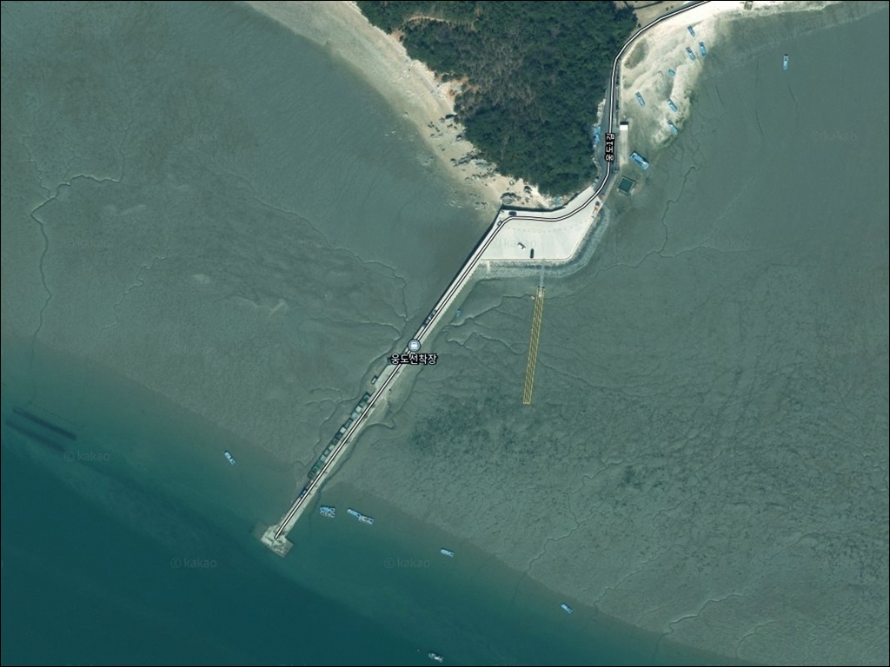
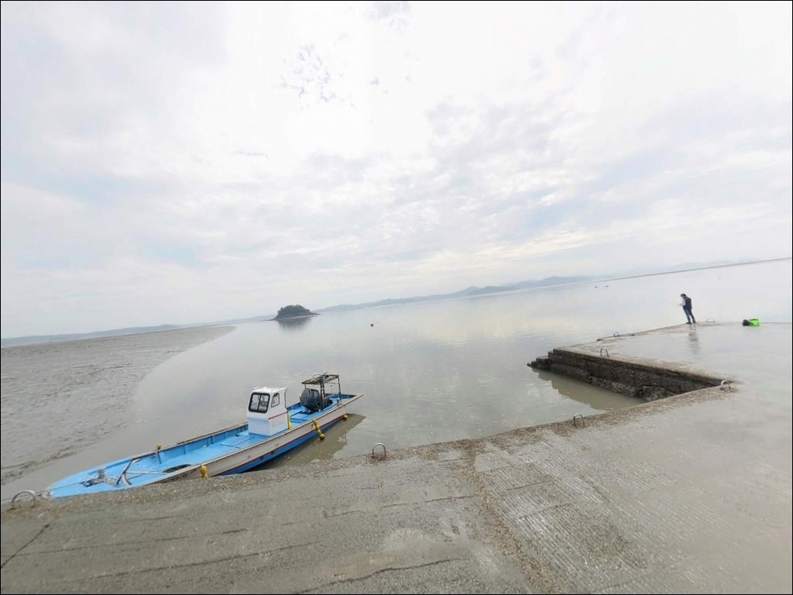
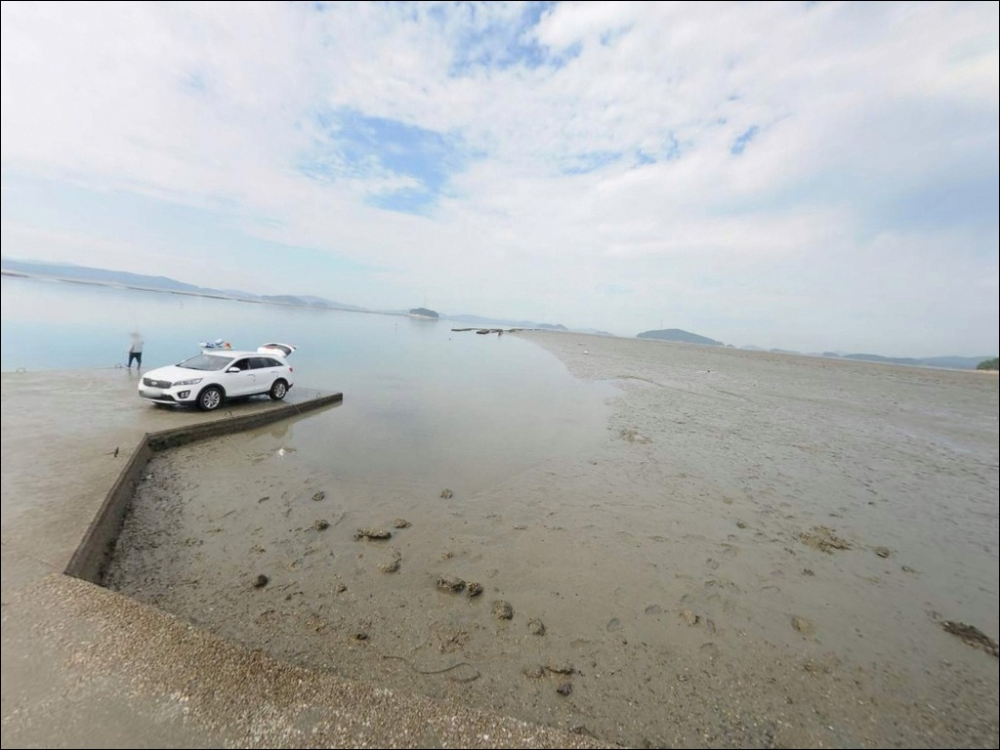
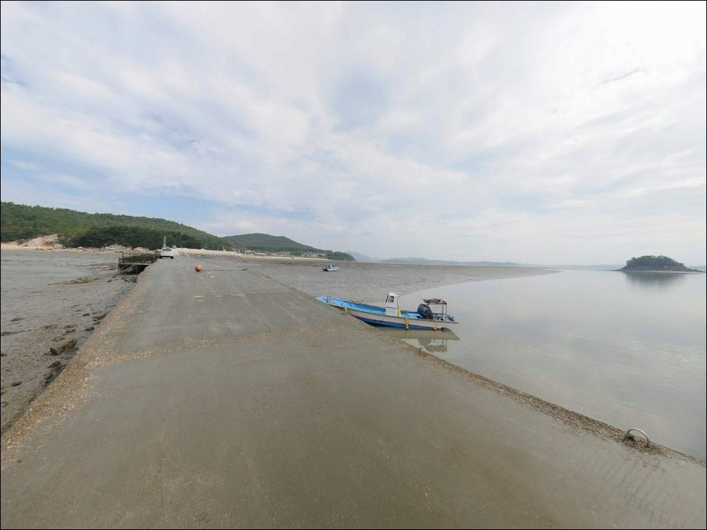
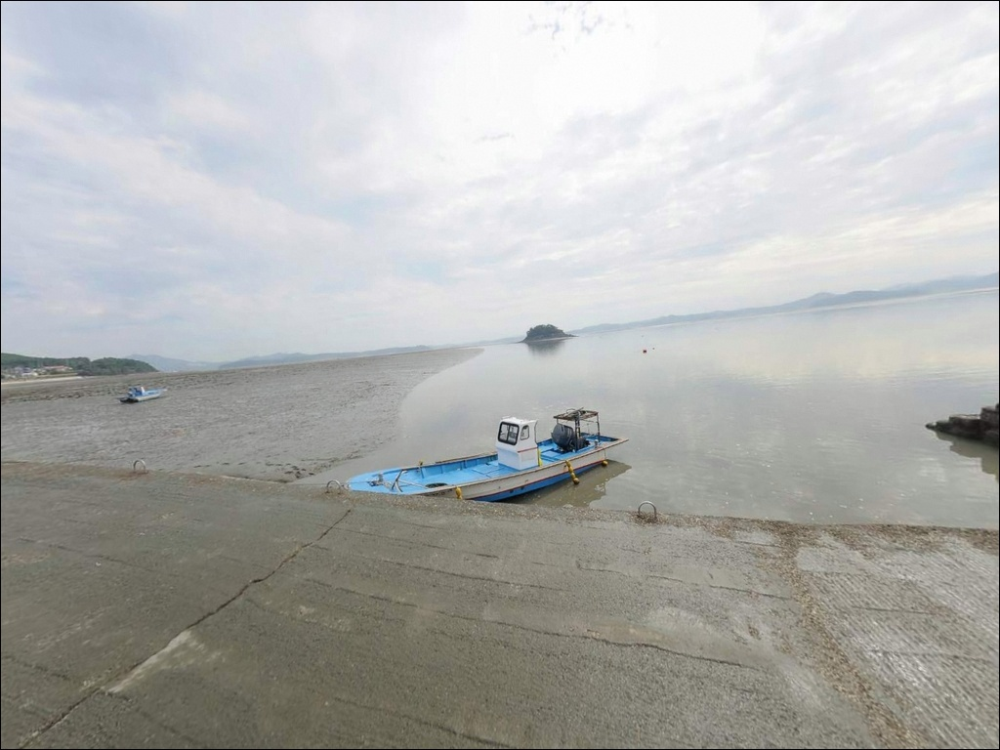
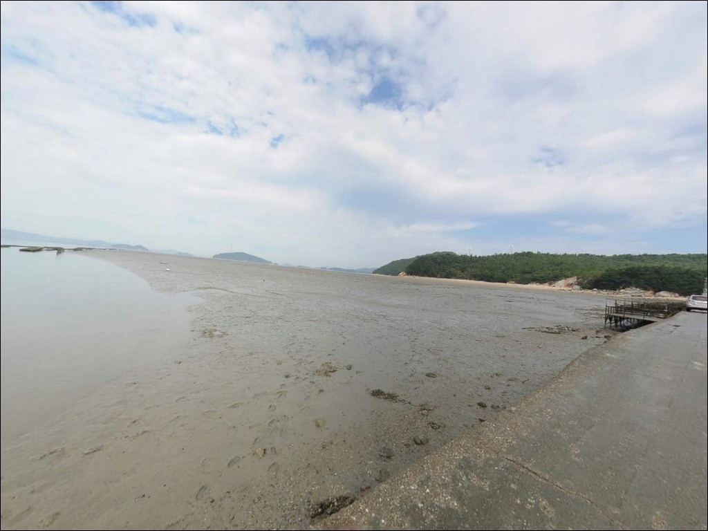
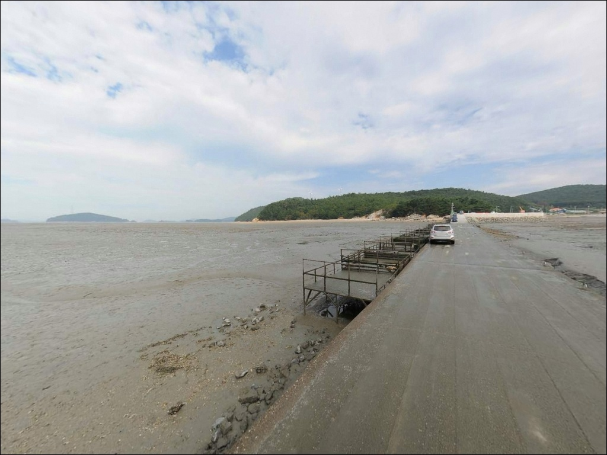
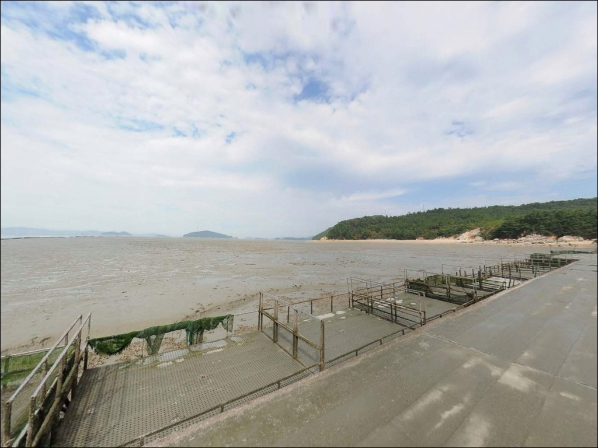
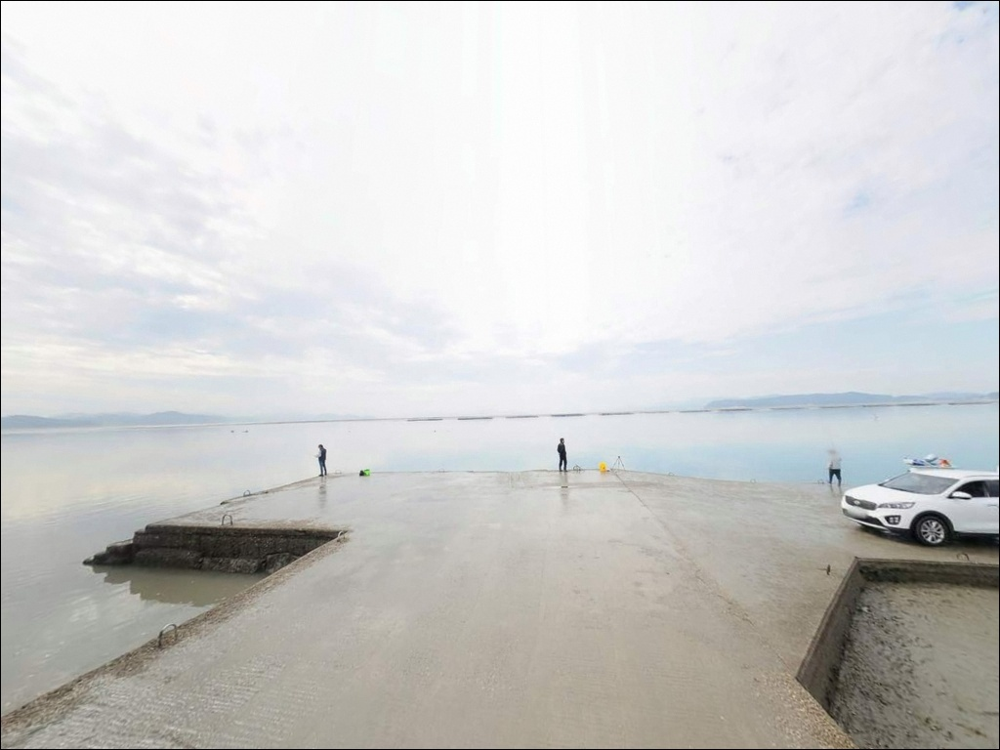

웅도선착장, 충남 서산시 풍경이 깊은 여운을 남기는 차박, 낚시 해안
이 페이지에는 광고(제휴 링크 포함)가 있으며, 광고 링크를 통해 구매하면 운영자가 판매 수익 또는 수수료를 받을 수 있습니다. 포인트 사진: 카카오맵 스카이뷰·로드뷰. 이 페이지의 지도·사진 이미지는 카카오맵의 실제 서비스 이미지와 다를 수 있습니다.


웅도선착장
충남 서산시 대산읍 웅도리 산 45
웅도선착장에서 가장 흔한 실수는
물때 시간만 맞추고 조류 세기를 계산하지 않는 것입니다.
가로림만은 평균 조차 4m를 넘는 해역으로,
사리 전후에는 조류 속도가 빠르게 치솟아
어떤 채비를 써도 바닥 탐색이 어려운 상황이
만들어집니다.
충남 서산시 대산읍 웅도리,
가로림만 안쪽에 자리한 웅도선착장은
육지와 교량으로 연결된 섬 포인트입니다.
외해 직접 노출이 없는 내만 구조라
파도보다 조류 변화가 더 크게 작동하는 환경이며,
물때 계획이 낚시의 전제 조건인 포인트입니다.
이 글은 웅도선착장의 진입 조건,
지형 구조, 낚시 스타일 적합성,
물때 판단 기준에 집중합니다.
조황 단정이나 특정 어종 보장은
이 글의 범위에 포함되지 않습니다.

1. 진입 동선과 포인트 접근성
웅도는 교량이 정비된 이후
물때와 무관하게 차량 진입이 가능한 상태입니다.
교량에서 선착장까지는 약 2km의 섬 내부 도로를
이동해야 하며, 이 구간은
소형 차량 위주로 이동이 가능한 좁은 도로 구조입니다.
대형 SUV나 캠핑 장비를 실은 차량이라면
출발 전에 섬 내부 도로 폭을 미리 확인하는 편이 좋습니다.
중간 회차 공간이 넉넉하지 않아
초행이라면 섬 입구 공용주차장을 거점으로 잡고
선착장까지 도보로 이동하는 방식이
더 안정적인 접근 방법입니다.
선착장 인근은 어선 접안 구역이 포함되어 있어
주차 공간이 제한적입니다.
어선 동선과 어구 보관 구역을 피한 자리 선택이
기본 매너이며, 주차 후 어선 이동 동선은
수시로 확인하는 습관이 필요합니다.

2. 차박 환경과 야간 체류 여건
웅도는 반농반어 어촌 마을로
야간에는 차량 통행이 거의 없고 한적한 편입니다.
가로림만 내만 구조 덕분에 외해 파도 영향이 적어
기상이 크게 나쁜 날이 아니라면
바람 영향도 비교적 제한적인 환경입니다.
섬 입구 공용주차장이 주요 차박 거점으로
활용될 수 있습니다.
다만 야박 허용 여부와 주차장 규모는
방문 전 웅도어촌체험마을(041-666-0997)에
미리 확인하는 것이 기본 준비입니다.
선착장 방면은 가로등이 충분하지 않을 수 있어
개인 조명 장비는 필수입니다.
가로림만 전체가 해양보호구역으로 지정된 지역입니다.
갯벌 양식장 구역에서의 어패류 무단 채취는
현장 안내판 기준 금지 행위에 해당합니다.
차박과 낚시 외 취사·야영의 허용 범위는
출발 전 서산시청이나 관할 기관에
사전 확인이 필요한 사항입니다.


3. 주변 편의시설 및 인프라 현황
웅도 섬 내부에는 상시 운영하는
편의점이나 마트가 확인되지 않습니다.
완전 자급 체제로 진입하는 것이
현실적인 준비 방식입니다.
식수, 비상약품, 낚시 소품은
본토 출발 전에 모두 갖춰야 합니다.
웅도에서 차로 약 10~15분 거리의
삼길포항 일대에는 낚시점과 식당이
갖춰져 있습니다.
현장에서 소품이 부족해지면
이 동선을 활용하는 편이 효율적입니다.
응급 상황 발생 시 대산읍 방향으로
이동하는 시간이 상당하므로
연료·비상약품 준비는 여유 있게
챙겨두는 것이 기본입니다.

4. 방문 전 반드시 챙겨야 할 준비사항
가장 먼저 확인할 것은 물때입니다.
가로림만은 서해 중부 권역에서도
조차가 특히 큰 해역으로
사리 전후에는 조류가 급격히 빨라지는 편입니다.
바다타임에서 웅도 기준 물때표를 미리 확인하고,
조금 전후 또는 만조 전후 시간대에
낚시 일정을 맞추는 계획이 필요합니다.
가로림만 해양보호구역 내 활동 제한 범위를
미리 파악해 두는 것도 중요합니다.
갯벌 양식장 구역에서의 어패류 무단 채취는
금지 사항이며, 현장 안내판 위치와 경계를
진입 전에 인식하고 가는 편이 안전합니다.
갯벌이 넓게 드러나는 간조 구간에서는
갯바위와 호안 주변이 미끄럽습니다.
미끄럼 방지 신발과 구명조끼는
기본 안전 장비로 준비해야 하며,
야간 낚시를 계획한다면 헤드랜턴도
반드시 챙겨야 합니다.
어촌 마을 특성상 소음과 쓰레기 관리도
기본 매너로 지켜야 하는 포인트입니다.

5. 조차가 낚시 타이밍을 결정하는
웅도선착장 지형 구조
웅도선착장의 특징은 가로림만 내만 구조에서 나옵니다.
간조 시 갯벌이 넓게 드러나고
만조 시 수심이 들어오는 방식으로,
의미 있는 수심이 형성되는 구간이
만조 전후 2~3시간으로 비교적 좁습니다.
이 특성을 모르고 가면 물때가 맞아도
막상 낚시를 펼 수 없는 상황이 생깁니다.
선착장 끝단과 측면은 조류가 직접 닿는 구간으로,
주변보다 수심 변화가 뚜렷한 편입니다.
선착장 주변 해안선에는 암석 구간이 일부 포함되어 있어
바닥 어종 탐색에 다양한 지형 조건을
활용할 수 있는 환경입니다.
가로림만 내만 특성상
갑오징어 에깅보다는 낙지·쭈꾸미가
기대해볼 수 있는 어종입니다.
선착장 끝단은 조류가 직접 닿는 구간으로,
만조 전후 수심이 들어오는 2~3시간이
원투 탐색의 핵심 시간대입니다.
최신 조황은 가기 전에 꼭 검색해 보시기 바랍니다.


6. 포인트에 어울리는 낚시 스타일
원투낚시는 이 포인트 구조에 잘 어울리는 스타일입니다.
원투낚시란 무거운 봉돌을 달아 멀리 캐스팅한 뒤
바닥층을 공략하는 낚시 방식입니다.
만조 전후 수심이 확보되는 시간대에
선착장 끝단에서 바닥층을 노리는 방식이
가로림만 내만 구조에 맞습니다.
망둥어는 웅도 인근에서 어촌체험 프로그램으로
운영될 만큼 이 해역에서 기대해볼 수 있는 어종이며,
붕장어도 바닥 공략 시 시도해볼 만한
서해 내만형 대상어입니다.
소형 루어낚시는 선착장 주변 암석 구간에서
공략이 가능합니다.
지그헤드 채비로 바닥층을 천천히 탐색하는 방식이
이 지형에 어울리며, 조류가 느려지는
정조 전후 타이밍에
입질 가능성이 올라가는 구조입니다.
우럭과 광어 계열이 기대 어종입니다.
찌낚시는 선착장 내항 쪽 잔잔한 수면 구간에서
시도해볼 수 있습니다.
조류가 세지 않은 구간을 골라야
채비 흐름을 잡을 수 있으며,
숭어는 만조 시 연안으로 붙어드는
계절성 대상어입니다.
가로림만 내만에서 물때 계획 없이 출조하면
사리 전후 조류가 채비 컨트롤 자체를
어렵게 만드는 수준까지 빨라집니다.

7. 대안 포인트와 플랜 B 동선
웅도선착장 조건이 여의치 않을 때
가장 먼저 이동할 수 있는 곳은
삼길포항입니다.
웅도에서 차로 약 10~15분 거리에 있으며,
방파제 석축 주변과 끝단에서
원투와 루어낚시가 모두 이루어지는 포인트입니다.
낚시점과 식당이 갖춰져 있어
인프라 측면에서도 안정적인 대안입니다.
벌천포는 가로림만 입구 쪽에 위치한 포구로
웅도보다 외해에 가까운 지형입니다.
수심과 포인트 다양성에서 차이가 있어
같은 출조 계획에 함께 묶기 좋습니다.
벌천포해수욕장 쪽은 차박 여건도
상대적으로 나은 편으로,
웅도 차박 여건이 부족하다면
이 방향으로 거점을 잡는 동선이 있습니다.
가로림만 일대에는 웅도 외에도
소규모 포구와 방파제가 여럿 분포합니다.
하루 동선 안에서 2~3곳을 탐색하는 방식이
이 권역 낚시의 효율적인 접근법이며,
삼길포항을 베이스 캠프로 삼고
웅도를 탐색형으로 추가하는 동선이
첫 방문에 적합한 구성입니다.

물때와 조류를 파악하면
웅도선착장이 달라 보입니다
원투낚시와 루어 탐색을 즐기는 낚시인이라면
웅도선착장의 내만 지형 조건이 잘 맞는 구조입니다.
물때 계획을 충분히 세우고
만조 전후 타이밍에 맞춰 입장한다면
기대만큼의 낚시를 경험할 수 있는 포인트입니다.
반대로 사리 전후 조류가 세지는 타이밍이거나
편의시설을 기대하고 가면
불편한 상황을 만날 수 있는 곳이기도 합니다.
차박 여행자라면 가로림만 해양보호구역 내
취사·야영 허용 범위를 먼저 파악해두는 것이 좋습니다.
교량이 정비된 만큼 접근이 편해진 포인트이지만,
자급 준비와 물때 파악은
여전히 방문 성패를 나누는 기준입니다.
준비를 갖추고 찾는다면 조용한 가로림만 안쪽에서
낚시와 차박을 함께 즐길 수 있는 출조가 됩니다.